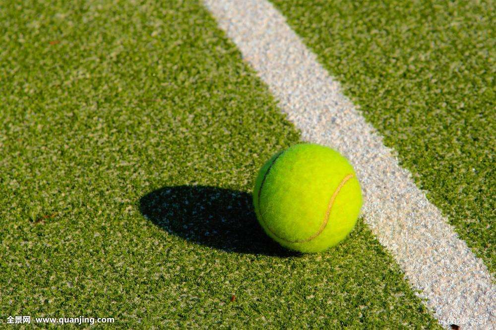

<button mat-raised-button color="primary" (click)="openDialog()">Add Project</button>
<div style="text-align:center" class="main-content">
  <mat-card class="mat-card">
    <mat-card-header>
      <mat-card-title>网球</mat-card-title>
    </mat-card-header>
    <a routerLink="/calendar/tennis">
      
    </a>
    <mat-card-content>
      <p>
        Testing
      </p>
    </mat-card-content>
  </mat-card>
